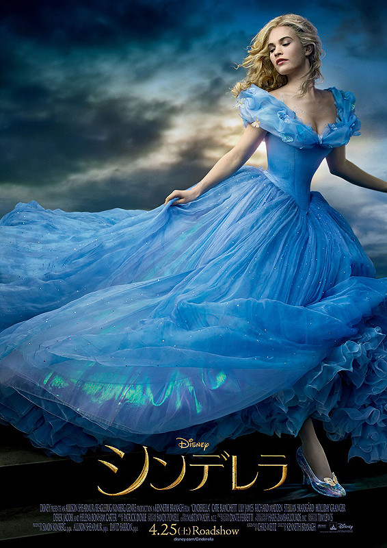
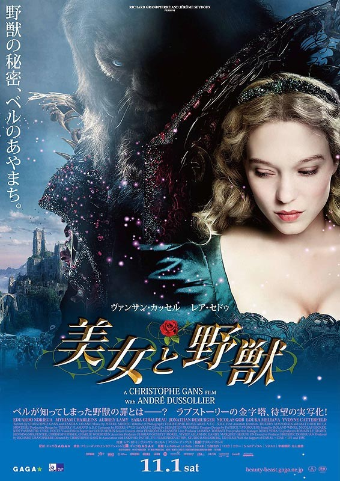
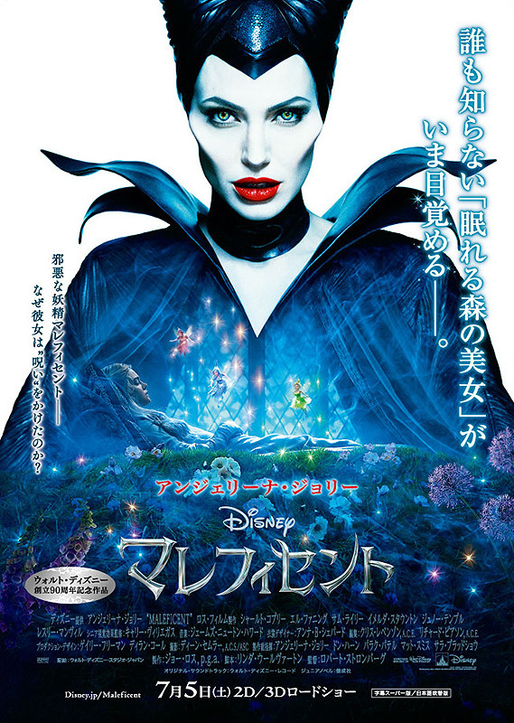
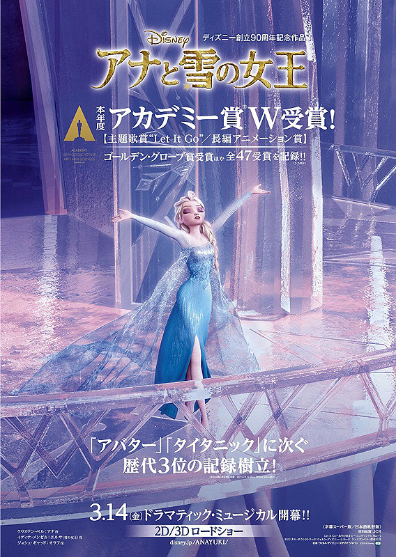

CINEMA JAPAN
MAIL
PASSWORD
人気映画ランキング
第１位

ディズニーのクラシック・アニメーションの名作としても知られる「シンデレラ」を、ディズニーが新たに実写映画化。 母を病気で、父を事故で失ったエラは、父の後妻である継母とその連れ子のドリゼラとアナスタシアに「灰まみれのエラ」を意味する「シンデレラ」と呼ばれ、召使いのように扱われていた。 ある日、耐えきれずに家を飛び出したエラは、森の中で城で働いているという青年キットと出会い、心を通わせる。王子である身分を隠していたキットは、 城に帰ると父である国王から政略結婚を勧められるが、森で出会ったエラが忘れられず、彼女を探し出すため国中の未婚女性を招いた舞踏会を計画する。 イギリス出身の新星リリー・ジェームズがシンデレラに扮し、意地悪な継母をオスカー女優のケイト・ブランシェットが演じた。 俳優としても活躍し、監督としては「ハムレット」「恋の骨折り損」「魔笛」などを手がけてきたケネス・ブラナーがメガホンをとった。
第２位

ディズニーアニメ版でも広く知られるファンタジードラマの名作「美女と野獣」を、1740年に初めて書かれたビルヌーヴ夫人版の物語をもとにフランスで実写映画化。 監督は「サイレントヒル」「ジェヴォーダンの獣」のクリストフ・ガンズ。 野獣役に「ブラック・スワン」のバンサン・カッセル、ヒロインのベル役は「アデル、ブルーは熱い色」でカンヌ映画祭パルムドールを受賞したレア・セドゥー。 バラを盗んだ父の罪を背負い、野獣の城に閉じ込められた美しい娘ベル。 しかし、城の主の野獣は毎夜ディナーを共にすること以外、何も強要してこない。 やがてベルは野獣の恐ろしい姿の下にある、もうひとつの姿に気付きはじめ、野獣が犯した罪や城で過去に起こった出来事の真実が解き明かされていく。
第３位

ディズニー・アニメの名作「眠れる森の美女」（1959）を、邪悪な妖精マレフィセントの視点から描き、アニメでは語られなかったマレフィセントとオーロラ姫の間にある隠された物語を明らかにする実写3D映画。 アンジェリーナ・ジョリーがマレフィセント、エル・ファニングがマレフィセントに眠りの呪いをかけられるオーロラ姫を演じたほか、ジョリーの娘ビビアンが幼少期のオーロラ姫に扮している。 「アバター」「アリス・イン・ワンダーランド」のプロダクションデザインでアカデミー美術賞を受賞したロバート・ストロンバーグがメガホンをとった。
第４位

アンデルセンの「雪の女王」にインスピレーションを得て、運命に引き裂かれた王家の姉妹が、凍てついた世界を救うため冒険を繰り広げる姿を描いた。 触れたものを凍らせる秘密の力を持ったエルサは、その力で妹アナを傷つけてしまうことを恐れ、城の部屋に閉じこもって暮らしてきた。 やがて成長したエルサは女王の座に就くこととなり、戴冠式のためにひさびさに人々の前に姿を現すが、ふとしたきっかけで力が暴走。 王国を真冬の世界に変えてしまう。耐えきらず逃げ出したエルサは雪山の奥で自らの力を存分に解放し、ありのままの自分でいられることに生きる喜びを見出す。 一方、アナは姉と王国を救うため、山男のクリストフとその相棒のトナカイのスヴェン、夏にあこがれる雪だるまのオラフとともに、雪山の奥へと旅に出る。 監督は「ターザン」「サーフズ・アップ」のクリス・バックと、「シュガー・ラッシュ」の脚本を手がけたジェニファー・リー。 ピクサー作品を除いたディズニーアニメとして、アカデミー長編アニメーション賞を受賞したのは本作が初となる。
今月のおすすめ作品
ディズニーのクラシック・アニメーションの名作としても知られる「シンデレラ」を、ディズニーが新たに実写映画化。 母を病気で、父を事故で失ったエラは、父の後妻である継母とその連れ子のドリゼラとアナスタシアに「灰まみれのエラ」を意味する「シンデレラ」と呼ばれ、召使いのように扱われていた。 ある日、耐えきれずに家を飛び出したエラは、森の中で城で働いているという青年キットと出会い、心を通わせる。王子である身分を隠していたキットは、 城に帰ると父である国王から政略結婚を勧められるが、森で出会ったエラが忘れられず、彼女を探し出すため国中の未婚女性を招いた舞踏会を計画する。 イギリス出身の新星リリー・ジェームズがシンデレラに扮し、意地悪な継母をオスカー女優のケイト・ブランシェットが演じた。 俳優としても活躍し、監督としては「ハムレット」「恋の骨折り損」「魔笛」などを手がけてきたケネス・ブラナーがメガホンをとった。
ディズニーアニメ版でも広く知られるファンタジードラマの名作「美女と野獣」を、1740年に初めて書かれたビルヌーヴ夫人版の物語をもとにフランスで実写映画化。 監督は「サイレントヒル」「ジェヴォーダンの獣」のクリストフ・ガンズ。 野獣役に「ブラック・スワン」のバンサン・カッセル、ヒロインのベル役は「アデル、ブルーは熱い色」でカンヌ映画祭パルムドールを受賞したレア・セドゥー。 バラを盗んだ父の罪を背負い、野獣の城に閉じ込められた美しい娘ベル。 しかし、城の主の野獣は毎夜ディナーを共にすること以外、何も強要してこない。 やがてベルは野獣の恐ろしい姿の下にある、もうひとつの姿に気付きはじめ、野獣が犯した罪や城で過去に起こった出来事の真実が解き明かされていく。
ディズニー・アニメの名作「眠れる森の美女」（1959）を、邪悪な妖精マレフィセントの視点から描き、アニメでは語られなかったマレフィセントとオーロラ姫の間にある隠された物語を明らかにする実写3D映画。 アンジェリーナ・ジョリーがマレフィセント、エル・ファニングがマレフィセントに眠りの呪いをかけられるオーロラ姫を演じたほか、ジョリーの娘ビビアンが幼少期のオーロラ姫に扮している。 「アバター」「アリス・イン・ワンダーランド」のプロダクションデザインでアカデミー美術賞を受賞したロバート・ストロンバーグがメガホンをとった。
アンデルセンの「雪の女王」にインスピレーションを得て、運命に引き裂かれた王家の姉妹が、凍てついた世界を救うため冒険を繰り広げる姿を描いた。 触れたものを凍らせる秘密の力を持ったエルサは、その力で妹アナを傷つけてしまうことを恐れ、城の部屋に閉じこもって暮らしてきた。 やがて成長したエルサは女王の座に就くこととなり、戴冠式のためにひさびさに人々の前に姿を現すが、ふとしたきっかけで力が暴走。 王国を真冬の世界に変えてしまう。耐えきらず逃げ出したエルサは雪山の奥で自らの力を存分に解放し、ありのままの自分でいられることに生きる喜びを見出す。 一方、アナは姉と王国を救うため、山男のクリストフとその相棒のトナカイのスヴェン、夏にあこがれる雪だるまのオラフとともに、雪山の奥へと旅に出る。 監督は「ターザン」「サーフズ・アップ」のクリス・バックと、「シュガー・ラッシュ」の脚本を手がけたジェニファー・リー。 ピクサー作品を除いたディズニーアニメとして、アカデミー長編アニメーション賞を受賞したのは本作が初となる。
TOHO CINEMAS
109 CINEMAS
UNITED CINEMAS
AEON CINEMAS